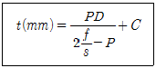

가스산업기사 (2014-09-20 기출문제)
1과목: 연소공학
1. 연소의 난이성에 대한 설명으로 옳지 않은 것은?
- 화학적 친화력이 큰 가연물이 연소가 잘된다.
- 연소성가스가 많이 발생하면 연소가 잘된다.
- 환원성 분위기가 잘 조성되면 연소가 잘된다.
- 열전도율이 낮은 물질은 연소가 잘된다.
(정답률: 76%)

2. 과열증기온도와 포화증기온도의 차를 무엇이라고 하는가?
- 포화도
- 비습도
- 과열도
- 건조도
(정답률: 75%)
3. 이너트 가스(Inert gas)로 사용되지 않는 것은?
- 질소
- 이산화탄소
- 수증기
- 수소
(정답률: 77%)
4. 화학반응 중 폭발의 원인과 관련이 가장 먼 반응은?
- 산화반응
- 중화반응
- 분해반응
- 중합반응
(정답률: 82%)
5. 상온, 상압하에서 프로판이 공기와 혼합되는 경우 폭발범위는 약 몇 %인가?
- 1.9~8.5
- 2.2~9.5
- 5.3~14
- 4.0~75
(정답률: 85%)
6. CO2 40 vol%, O2 10 vol%, N2 50 vol%인 혼합기체의 평균분자량은 얼마인가?
- 16.8
- 17.4
- 33.5
- 34.8
(정답률: 71%)
7. 가스를 연료로 사용하는 연소의 장점이 아닌 것은?
- 연소의 조절이 신속, 정확하며 자동제어에 적합 하다.
- 온도가 낮은 연소실에서도 안정된 불꽃으로 높은 연소효율이 가능하다.
- 연소속도가 커서 연료로서 안전성이 높다.
- 소형 버너를 병용 사용하여 로내 온도분포를 자유로이 조절할 수 있다.
(정답률: 79%)
8. 기체상수 R을 계산한 결과 1.987이었다. 이때 사용 되는 단위는?
- L·atm/mol·K
- cal/mol·K
- erg/kmol·K
- Joule/mol·K
(정답률: 80%)
9. 500L의 용기에 40 atm·abs, 30℃에서 산소(O2)가 충전되어 있다. 이때 산소는 몇 kg인가?
- 7.8kg
- 12.9kg
- 25.7kg
- 31.2kg
(정답률: 57%)
10. 소화의 종류 및 주변의 공기 또는 산소를 차단하여 소화하는 방법은?
- 억제소화
- 냉각소화
- 제거소화
- 질식소화
(정답률: 82%)
11. 폭굉(Detonation)에 대한 설명으로 옳지 않은 것은?
- 발열반응이다.
- 연소의 전파속도가 음속보다 느리다.
- 충격파가 발생한다.
- 짧은 시간에 에너지가 방출된다.
(정답률: 93%)
12. 위험장소 분류 중 폭발성 가스의 농도가 연속적이 거나 장시간 지속적으로 폭발한계 이상이 되는 장소 또는 지속적인 위험상태가 생성되거나 생성될 우려가 있는 장소는?
- 제 0종 위험장소
- 제 1종 위험장소
- 제 2종 위험장소
- 제 3종 위험장소
(정답률: 78%)
13. 불활성화 방법 중 용액에 액체를 채운 다음 용기로부터 액체를 배출시키는 동시에 증기층으로 불활성가스를 주입하여 원하는 산소농도를 만드는 퍼지방법은?
- 사이폰퍼지
- 스위프퍼지
- 압력퍼지
- 진공퍼지
(정답률: 73%)
14. BLEVE(Boiling Liquid Expanding Vapour Explosion) 현상에 대한 설명으로 옳은 것은?
- 물이 점성의 뜨거운 기름 표면 아래서 끓을 때 연소를 동반하지 않고 overflow 되는 현상
- 물이 연소유(oil)의 뜨거운 표면에 들어갈 때 발생 되는 overflow 현상
- 탱크바닥에 물과 기름의 에멀젼이 섞여있을 때기름의 비등으로 인하여 급격하게 overflow 되는 현상
- 과열상태의 탱크에서 내부의 액화 가스가 분출, 일시에 기화되어 착화, 폭발하는 현상
(정답률: 86%)
15. 액체연료의 연소형태와 가장 거리가 먼 것은?
- 분무연소
- 등심연소
- 분해연소
- 증발연소
(정답률: 75%)
16. 연소한계, 폭발한계, 폭굉한계를 일반적으로 비교한 것 중 옳은 것은?
- 연소한계는 폭발한계보다 넓으며, 폭발한계와 폭굉한계는 같다.
- 연소한계와 폭발한계는 같으며, 폭굉한계보다는 넓다.
- 연소한계는 폭발한계보다 넓고, 폭발한계는 폭굉 한계보다 넓다.
- 연소한계, 폭발한계, 폭굉한계는 같으며, 단지 연소현상으로 구분된다.
(정답률: 71%)
17. 폭발범위가 넓은 것부터 차례로 된 것은?
- 일산화탄소 > 메탄 > 프로판
- 일산화탄소 > 프로판 > 메탄
- 프로판 > 메탄 > 일산화탄소
- 메탄 > 프로판 > 일산화탄소
(정답률: 77%)
18. 액체공기 100kg중에는 산소가 약 몇 kg이 들어 있는가? (단, 공기는 79 mol% N2 와 21mol% O2로 되어 있다.)
- 18.3
- 21.1
- 23.3
- 25.4
(정답률: 60%)
19. 100℃의 수증기 1kg 이 100℃의 물로 응결될 때 수증기 엔트로피 변화량은 몇 kJ/K인가? (단, 물의 증발잠열은 2256.7kJ/kg이다.)
- -4.87
- -6.⑤
- -7.24
- -8.67
(정답률: 63%)
20. 다음 연소와 관련된 식으로 옳은 것은?
- 과잉공기비 - 공기비(m)-1
- 과잉공기량 = 이론공기량(Ag)＋1
- 실제공기량 = 공기비(m)＋이론공기량(Ag)
- 공기비 = (이론산소량 / 실제공기량) - 이론공기량
(정답률: 86%)
2과목: 가스설비
21. 압축가스를 저장하는 납붙임 용기의 내압시험압력은?
- 상용압력 수치의 5분의 3배
- 상용압력 수치의 3분의 5배
- 최고충전압력수치의 5분의 3배
- 최고충전압력 수치의 3분의 5배
(정답률: 65%)
22. 고압가스냉동제조시설의 자동제어장치에 해당하지 않는 것은?
- 저압차단장치
- 과부하보호장치
- 자동급수 및 살수장치
- 단수보호장치
(정답률: 61%)
23. 노즐에서 분출되는 가스 분출속도에 의해 연소에 필요한 공기의 일부를 흡입하여 혼합기 내에서 잘 혼합하여 염공으로 보내 연소하고 이때 부족한 연소공기는 불꽃주위로부터 새로운 공기를 혼입하여 가스를 연소시키며 연소실 온도가 가장 높은 방식의 버너는?
- 분젠식 버너
- 전1차식버너
- 적화식 버너
- 세미분젠식 버너
(정답률: 81%)
24. 입구 측 압력이 0.5MPa 이상인 정압기의 안전밸브 분출구경의 크기는 얼마 이상으로 하여야 하는가?
- 20A
- 25A
- 32A
- 50A
(정답률: 58%)
25. 직동식 정압기와 비교한 파이럿식 정압기의 특성에 대한 설명으로 틀린 것은?
- 대용량이다.
- 오프셋이 커진다.
- 요구 유량제어 범위가 넓은 경우에 적합하다.
- 높은 압력제어 정도가 요구되는 경우에 적합하다.
(정답률: 80%)
26. 도시가스 공급관에서 전위차가 일정하고 비교적 작기 때문에 전위구배가 적은 장소에 적합한 전기 방식법은?
- 외부전원법
- 희생양극법
- 선택배류법
- 강제배류법
(정답률: 74%)
27. 도시가스용 압력조정기에서 스프링은 어떤 재질을 사용하는가?
- 주물
- 강재
- 알루미늄합금
- 다이케스팅
(정답률: 83%)
28. 대기 중에 10m 배관을 연결할 때 중간에 상온스프링을 이용하여 연결하려 한다면 중간 연결부에서 얼마의 간격으로 하여야 하는가? (단, 대기 중의 온도는 최저 -20℃, 최고 30℃이고, 배관의 열팽창 계수는 7.2 × 10-5/℃이다.)
- 18mm
- 24mm
- 36mm
- 48mm
(정답률: 49%)
29. 압축기의 종류 중 구동모터와 압축기가 분리된 구조로서 벨트나 커플링에 의하여 구동되는 압축기의 형식은?
- 개방형
- 반밀폐형
- 밀폐형
- 무급유형
(정답률: 68%)
30. 물 수송량이 6000L/min, 전양정이 45m, 효율이 75%인 터빈 펌프의 소요 마력은 약 몇 kW인가?
- 40
- 47
- 59
- 68
(정답률: 62%)
31. 고압장치의 재료로 구리관의 성질과 특징으로 틀린 것은?
- 알칼리에는 내식성이 강하지만 산성에는 약하다.
- 내면이 매끈하여 유체저항이 적다.
- 굴곡성이 좋아 가공이 용이하다.
- 전도 및 전기절연성이 우수하다.
(정답률: 81%)
32. 원심펌프를 병렬로 연결하는 것은 무엇을 증가시키기 위한 것인가?
- 양정
- 동력
- 유량
- 효율
(정답률: 78%)
33. 배관에는 온도변화 및 여러 가지 하중을 받기 때문에 이에 견디는 배관을 설계해야 한다. 외경과 내경의 비가 1.2 미만인 경우 배관의 두께는 아래 식에 의하여 계산된다. 기호 P의 의미로 옳게 표시된 것은?

- 충전압력
- 상용압력
- 사용압력
- 최고충전압력
(정답률: 78%)
34. 액화석유가스사용시설에서 배관의 이음매와 절연 조치를 한 전선과는 최소 얼마 이상의 거리를 두어야 하는가?
- 10㎝
- 15㎝
- 30㎝
- 40㎝
(정답률: 72%)
35. 천연가스 중앙공급 방식의 특징에 대한 설명으로 옳은 것은?
- 단시간의 정전이 발생하여도 영향을 받지 않고 가스를 공급할 수 있다.
- 고압공급 방식보다 가스 수송능력이 우수하다.
- 중앙 공급배관(강관)은 전기방식을 할 필요가 없다.
- 중압배관에서 발생하는 압력감소의 주된 원인은 가스의 재응축 때문이다.
(정답률: 71%)
36. 고압가스설비의 운전을 정지하고 수리할 때 일반 적으로 유의하여야 할 사항이 아닌 것은?
- 가스 치환작업
- 안전밸브 작동
- 장치내부 가스분석
- 배관의 차단
(정답률: 77%)
37. 액화석유가스(LPG) 20 kg 용기를 재검사하기 위하여 수압에 의한 내압시험을 하였다. 이때 전증가량이 200mL, 영구증가량이 20mL였다면 영구증가 율과 적합 여부를 판단하면?
- 10%, 합격
- 10%, 불합격
- 20%, 합격
- 20%, 불합격
(정답률: 69%)
38. 배관설계 시 고려하여야 할 사항으로 가장 거리가 먼 것은?
- 가능한 옥외에 설치할 것
- 굴곡을 적게 할 것
- 은폐하여 매설할 것
- 최단거리로 할 것
(정답률: 80%)
39. 도시가스 배관의 내진설계 기준에서 일반도시가스사업자가 소유하는 배관의 경우 내진 1등급에 해당되는 압력은 최고 사용압력이 얼마의 배관을 말하는가?
- 0.1MPa
- 0.3MPa
- 0.5MPa
- 1MPa
(정답률: 52%)
40. 정압기의 이상감압에 대처할 수 있는 방법이 아닌 것은?
- 저압배관의 loop화
- 2차 측 압력 감시장치 설치
- 정압기 2계열 설치
- 필터 설치
(정답률: 84%)
3과목: 가스안전관리
41. 일반도시가스사업소에 설치된 정압기 필터 분해 점검에 대하여 옳게 설명한 것은?
- 가스공급 개시 후 매년 1회 이상 실시한다.
- 가스공급 개시 후 2년에 1회 이상 실시한다.
- 설치 후 매년 1회 이상 실시한다.
- 설치 후 2년에 1회 이상 실시한다.
(정답률: 69%)
42. 가연성가스 저장탱크 및 처리설비를 실내에 설치하는 기준에 대한 설명 중 틀린 것은?
- 저장탱크와 처리설비는 구분 없이 동일한 실내에 설치한다.
- 저장탱크 및 처리설비가 설치된 실내는 천정·벽 및 바닥의 두께가 30㎝ 이상인 철근콘크리트로 한다.
- 저장탱크의 정상부와 저장탱크실 천정과의 거리는 60㎝ 이상으로 한다.
- 저장탱크에 설치한 안전밸브는 지상 5m 이상의 높이에 방출구가 있는 가스방출관을 설치한다.
(정답률: 79%)
43. 액화석유가스 충전시설에서 가스산업기사 이상의 자격을 선입하여야 하는 저장능력의 기준은?
- 30톤 초과
- 100톤 초과
- 300톤 초과
- 500톤 초과
(정답률: 64%)
44. LPG 사용시설에서 용기보관실 및 용기집합설비의 설치에 대한 설명으로 틀린 것은?
- 저장능력이 100kg을 초과하는 경우에는 옥외에 용기보관실을 설치한다.
- 용기보관실의 벽, 문, 지붕은 불연재료로 하고 복층구조로 한다.
- 건물과 건물사이 등 용기보관실 설치가 곤란한 경우에는 외부인의 출입을 방지하기 위한 출입문을 설치한다.
- 용기집합설비의 양단 마감조치 시에는 캡 또는 플랜지로 마감한다.
(정답률: 83%)
45. 고정식 압축도시가스 이동식 충전차량 충전시설에 설치하는 가스누출검지경보장치의 설치위치가 아닌 것은?
- 개방형 피트외부에 설치된 배관 접속부 주위
- 압축가스설비 주변
- 개별 충전설비 본체 내부
- 펌프 주변
(정답률: 58%)
46. 소비자 1호당 1일 평균 가스소비량이 1.6kg/day이고, 소비호수 10호인 경우 자동절체조정기를 사용하는 설비를 설계하면 용기는 몇 개 정도 필요한가? (단, 표준가스발생능력은 1.6kg/h이고, 평균가스소비율은 60%, 용기는 2계열 집합으로 사용한다.)
- 8개
- 10개
- 12개
- 14개
(정답률: 66%)
47. 저장탱크의 맞대기 용접부 기계시험 방법이 아닌 것은?
- 비파괴시험
- 이음매 인장 시험
- 표면 굽힘 시험
- 측면 굽힘 시험
(정답률: 68%)
48. 고압가스안전관리법에 의한 LPG용접 용기를 제조하고자 하는 자가 반드시 갖추지 않아도 되는 설비는?
- 성형설
- 원료 혼합설비
- 열처리 설비
- 세척설비
(정답률: 69%)
49. 가스위험성 평가에서 위험도가 큰 가스부터 작은 순서대로 바르게 나열된 것은?
- C2H6, CO, CH4, NH3
- C2H6, CH4, CO, NH3
- CO, CH4, C2H6, NH3
- CO, C2H6, CH4, NH3
(정답률: 55%)
50. 저장능력이 20톤인 암모니아 저장탱크 2기를 지하에 인접하여 매설할 경우 상호 간에 최소 몇 m 이상의 이격거리를 유지하여야 하는가?
- 0.6m
- 0.8m
- 1m
- 1.2m
(정답률: 81%)
51. 고압가스의 운반기준에서 동일 차량에 적재하여 운반할 수 없는 것은?
- 염소와 아세틸렌
- 질소와 산소
- 아세틸렌과 산소
- 프로판과 부탄
(정답률: 85%)
52. 독성가스가 누출되었을 경우 이에 대한 제독조치 로서 적당하지 않은 것은?
- 물 또는 흡수제에 의하여 흡수 또는 중화하는 조치.
- 벤트스텍을 통하여 공기 중에 방출시키는 조치
- 흡착제에 의하여 흡착제거하는 조치
- 집액구 등으로 고인 액화가스를 펌프 등의 이송 설비로 반송하는 조치
(정답률: 79%)
53. 폭발방지대책을 수립하고자 할 경우 먼저 분석하여야 할 사항으로 가장 거리가 먼 것은?
- 요인분석
- 위험성평가분석
- 피해예측분석
- 보험가입여부분석
(정답률: 90%)
54. 가연성가스 또는 산소를 운반하는 차량에 휴대하여야 하는 소화기로 옳은 것은?
- 포말소화기
- 분말소화기
- 화학포소화기
- 간이소화기
(정답률: 86%)
55. 용기에 의한 액화석유가스 사용시설의 기준으로 틀린 것은?
- 가스저장실 주위에 보기 쉽게 경계표시를 한다.
- 저장능력이 250kg 이상인 사용시설에는 압력이 상승한 때를 대비하여 과압안전장치를 설치한다.
- 용기는 용기집합설비의 저장능력이 300kg 이하 인 경우 용기, 용기밸브 및 압력조정기가 직사광 선, 빗물 등에 노출되지 않도록 한다.
- 내용적 20L 이상의 충전용기를 옥외에서 이동하여 사용하는 때에는 용기운반손수레에 단단히 묶어 사용한다.
(정답률: 62%)
56. 발연황산시약을 사용한 오르잣드법 또는 브롬시약을 사용한 뷰렛법에 의한 시험으로 품질검사를 하는 가스는?
- 산소
- 암모니아
- 수소
- 아세틸렌
(정답률: 63%)
57. 고압가스 저장설비에 설치하는 긴급차단장치에 대한 설명으로 틀린 것은?
- 저장설비의 내부에 설치하여도 된다.
- 동력원(動力源)은 액압, 기압, 전기 또는 스프링으로 한다.
- 조작 버튼(Button)은 저장설비에서 가장 가까운 곳에 설치한다.
- 간단하고 확실하며 신속히 차단되는 구조라야 한다.
(정답률: 80%)
58. 고압가스 일반제조시설의 배관설치에 대한 설명으로 틀린 것은?
- 배관은 지면으로부터 최소한 1m 이상의 깊이에 매설한다.
- 배관의 부식방지를 위하여 지면으로부터 30㎝ 이상의 거리를 유지한다.
- 배관설비는 상용압력의 2배 이상의 압력에 항복을 일으키지 아니하는 두께 이상으로 한다.
- 모든 독성가스는 2중관으로 한다.
(정답률: 79%)
59. 고압가스 운반 중 가스누출 부분에 수리가 불가능한 사고가 발생하였을 경우의 조치로서 가장 거리가 먼 것은?
- 상황에 따라 안전한 장소로 운반한다.
- 부근의 화기를 없앤다.
- 소화기를 이용하여 소화한다.
- 비상연락망에 따라 관계 업소에 원조를 의뢰한다.
(정답률: 83%)
60. 공기액화 분리기의 운전을 중지하고 액화산소를 방출해야 하는 경우는?
- 액화산소 5L 중 아세틸렌의 질량이 1mg을 넘을 때.
- 액화산소 5L 중 아세틸렌의 질량 5mg을 넘을 때
- 액화산소 5L 중 탄화수소의 탄소 질량이 5mg을 넘을 때
- 액화산소 5L 중 탄화수소의 탄소 질량이 50mg을 넘을 때
(정답률: 70%)
4과목: 가스계측
61. 열전도율식 CO2 분석계 사용 시 주의사항 중 틀린 것은?
- 가스의 유속을 거의 일정하게 한다.
- 수소가스(H2)의 혼입으로 지시 값을 높여 준다.
- 셀의 주위 온도와 측정가스의 온도를 거의 일정 하게 유지시키고 과도한 상승을 피한다.
- 브리지의 공급 전류의 점검을 확실하게 한다.
(정답률: 81%)
62. 가스 분석에서 흡수 분석법에 해당하는 것은?
- 적정법
- 중량법
- 흡광광도법
- 헴펠법
(정답률: 83%)
63. 용적식 유랑계의 특징에 대한 설명 중 옳지 않은 것은?
- 유체의 물성치(온도, 압력 등)에 의한 영향을 거의 받지 않는다.
- 점도가 높은 액의 유량 측정에는 적합하지 않다.
- 유랑계 전후의 직관길이에 영향을 받지 않는다.
- 외부 에너지의 공급이 없어도 측정할 수 있다.
(정답률: 57%)
64. 물체는 고온이 되면, 온도 상승과 더불어 짧은 파장의 에너지를 발산한다. 이러한 원리를 이용하는 색온도계의 온도와 색과의 관계가 바르게 짝지어진 것은?
- 800℃ - 오렌지색
- 1000℃ - 노란색
- 1200℃ - 눈부신 황백색
- 2000℃ - 매우 눈부신 흰색
(정답률: 70%)
65. 전자유량계는 다음 중 어느 법칙을 이용한 것인가?
- 쿨롱의 전자유도법칙
- 오옴의 전자유도법칙
- 패러데이의 전자유도법칙
- 주울의 전자유도법칙
(정답률: 91%)
66. 막식가스미터의 고장에 대한 설명으로 틀린 것은?
- 부동 : 가스미터기를 통과하지만 계량되지 않는 고장
- 떨림 : 가스가 통과할 때에 출구측의 압력변동이 심하게 되어 가스의 연소형태를 불안정하게 하는 고장형태
- 기차불량 : 설치오류, 충격, 부품의 마모 등으로 계량정밀도가 저하되는 경우
- 불통 : 회전자 베어링 마모에 의한 회전저항이 크거나 설치 시 이물질이 기어 내부에 들어갈 경우
(정답률: 74%)
67. 다음 중 람베르트-비어의 법칙을 이용한 분석법은?
- 분광광도법
- 분별연소법
- 전위차적정법
- 가스마토그래피법
(정답률: 67%)
68. 내경 50㎜의 배관으로 평균유속 1.5m/s의 속도로 흐를 때의 유량(m3/h)은 얼마인가?
- 10.6
- 11.2
- 12.1
- 16.2
(정답률: 48%)
69. 전압 또는 전력증폭기, 제어밸브 등으로 되어 있으며 조절부에서 나온 신호를 증폭시켜, 제어대상을 작동시키는 장치는?
- 검출부
- 전송기
- 조절기
- 조작부
(정답률: 78%)
70. 유리제 온도계 중 알코올 온도계의 특징으로 옳은 것은?
- 저온측정에 적합하다.
- 표면장력이 커 모세관현상이 적다.
- 열팽창계수가 작다.
- 열전도율이 좋다.
(정답률: 77%)
71. 가스크로마토그래피의 운반기체(carrier gas)가 구비해야 할 조건으로 옳지 않은 것은?
- 비활성일 것
- 확산속도가 클 것
- 건조할 것
- 순도가 높을 것
(정답률: 64%)
72. 다음 가스계량기 중 간접측정 방법이 아닌 것은?
- 막식계량기
- 터빈계량기
- 오리피스 계량기
- 볼텍스 계량기
(정답률: 61%)
73. 유량측정에 대한 설명으로 옳지 않은 것은?
- 유체의 밀도가 변할 경우 질량유량을 측정하는 것이 좋다.
- 유체가 액체일 경우 온도와 압력에 의한 영향이 크다.
- 유체가 기체일 때 온도나 압력에 의한 밀도의 변화는 무시할 수 없다.
- 유체의 흐름이 층류일 때와 난류일 때의 유량측정 방법은 다르다.
(정답률: 57%)
74. 가스누출 검지경보장치의 기능에 대한 설명으로 틀린 것은?
- 경보농도는 가연성가스인 경우 폭발하한계의 1/4 이하 독성가스인 경우 TLV-TWA기준농도 이하로 할 것
- 경보를 발신한 후 5분 이내에 자동적으로 경보정지가 되어야 할 것
- 지시계의 눈금은 독성가스인 경우 0 ~ TLVTWA 기준 농도 3배 값을 명확하게 지시하는 것 일 것
- 가스검지에서 발신까지의 소요시간은 경보농도의 1.6배 농도에서 보통 30초 이내 일 것
(정답률: 78%)
75. 다음 중 접촉식 온도계에 해당하는 것은?
- 바이메탈 온도계
- 광고온계
- 방사온도계
- 광전관온도계
(정답률: 78%)
76. 가스크로마토그래피에서 사용하는 검출기가 아닌 것은?
- 원자방출검출기(AED)
- 황화학발광검출기(SCD)
- 열추적검출기(TTD)
- 열이온검출기(TID)
(정답률: 74%)
77. 산소 64kg과 질소 14kg의 혼합기체가 나타내는 전압이 10기압이면 이때 산소의 분압은 얼마인가?
- 2기압
- 4기압
- 6기압
- 8기압
(정답률: 61%)
78. 열전대 온도계의 일반적인 종류로서 옳지 않은 것은?
- 구리-콘스탄탄
- 백금-백금ㆍ로듐
- 크로멜-콘스탄탄
- 크로멜-알루멜
(정답률: 70%)
79. 전기저항 온도계에서 측온 저항체의 공칭저항치라고 하는 것은 몇 ℃의 온도일 때 저항소자의 저항을 의미하는가?
- -273℃
- 0℃
- 5℃
- 21℃
(정답률: 83%)
80. 대용량 수요처에 적합하며 100~5000m3/h의 용량범위를 갖는 가스미터는?
- 막식 가스미터
- 습식 가스미터
- 마노미터
- 루츠미터
(정답률: 76%)
환원성 분위기가 잘 조성되면 연소가 잘된다는 이유는, 연소 반응에서 산화와 환원이 일어나는데, 환원은 전자를 받아들이는 과정입니다. 따라서 환원성 분위기가 잘 조성되면 연료가 더 쉽게 환원되어 연소가 더 잘 일어나게 됩니다. 예를 들어, 산소가 충분히 공급되지 않은 환경에서는 연소가 잘 일어나지 않습니다.